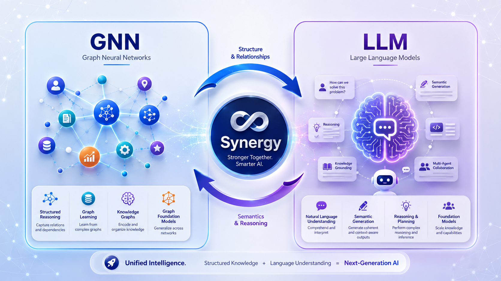
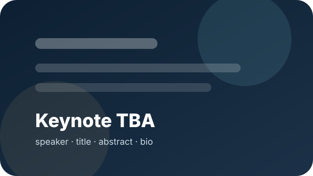
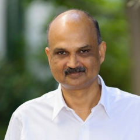

Call for Papers
Building the next generation of graph-aware, language-enabled, structurally grounded AI systems.
About GNN-LLM-SYN
Graph Neural Networks excel at modeling structured relationships and reasoning over discrete entities, while Large Language Models demonstrate exceptional capabilities in understanding unstructured text and generating human-like content. The synergy between these two paradigms creates new opportunities for advanced reasoning, representation learning, structural knowledge modeling, and reliable AI-driven applications.
This workshop invites original research on how GNNs can enhance LLMs with dynamic, graph-based reasoning, and how LLMs can empower GNNs with semantic understanding, natural language generation, and adaptive knowledge transfer. We especially welcome work that connects GNNs, LLMs, and Graph Foundation Models to solve complex, real-world problems.

Structured Reasoning
Dynamic graph inference, graph-aware prompting, and reasoning over heterogeneous relationships.
Semantic Transfer
LLM-driven contextualization, instruction tuning, and knowledge transfer for graph learning.
Graph Foundation Models
Unifying graph structures and language models for versatile, adaptable AI systems.
Trustworthy AI
Explainability, fairness, interpretability, and high-stakes structural knowledge modeling.
ICDM 2026 Context
Designed for the data mining community, with a focused bridge between graph learning and large model research.
Topics of Interest
We welcome papers related to, but not limited to, the following directions.
LLM for GNN
Leveraging LLMs to enhance GNN capabilities.
- Enhancing graph embeddings with LLM-driven contextualization
- Improving graph knowledge representation through LLM pre-training
- Instruction tuning for graph-aware LLMs
- Zero- and few-shot graph reasoning with LLMs
- Interactive graph exploration using LLMs
- Dynamic and evolving graphs with real-time LLM reasoning
- Improving GNN generalization with LLM-based knowledge
- Cross-domain graph transfer learning by LLMs
GNN for LLM
Leveraging GNNs to enhance LLM performance.
- GNNs as inference engines for LLMs
- Graph-based reasoning for improving LLM reasoning ability
- Graph-driven language generation for knowledge discovery
- Interactive graph reasoning for dynamic query processing
- Optimizing graph-based NLP tasks with GNN-LLM synergy
- Graph retrieval and graph-augmented generation for LLMs
- Knowledge graph grounding for factual and explainable LLM output
GNN-LLM Synergy
Integrated systems for advanced AI applications.
- Graph Foundation Models
- Graph-augmented multi-modal AI for real-world applications
- Multi-agent collaboration in GNN-LLM systems
- Ethics and fairness in GNN-LLM synergy
- Explainable models for transparent decision-making
- Interpretable graph reasoning in high-stakes applications
- Trustworthy AI in sensitive domains
Program
The final half-day schedule will be updated after ICDM 2026 workshop scheduling and paper acceptance.
| Time | Event | Presenter(s) |
|---|---|---|
| TBA | Opening Remarks and Workshop Overview | Workshop organizers |
| TBA | Keynote Speech I: Title TBA | Speaker TBA |
| TBA | Paper Session I: LLM for GNN and Graph-Aware LLMs | Accepted paper authors |
| TBA | Break / Poster Interaction | All participants |
| TBA | Keynote Speech II: Title TBA | Speaker TBA |
| TBA | Paper Session II: GNN for LLM, Graph Foundation Models, and Trustworthy AI | Accepted paper authors |
| TBA | Panel Discussion and Closing Remarks | Organizers, keynote speakers, and invited panelists |
Keynote Speakers
Reserved slots for invited talks. Replace the placeholder images and text once keynote information is confirmed.

Keynote Speaker I
Title: TBA
Abstract: TBA. This area is prepared for a talk abstract on GNN-LLM synergy, structural reasoning, or graph foundation models.
Bio: TBA.
Keynote Speaker II
Title: TBA
Abstract: TBA. This area is prepared for a talk abstract on graph-aware LLMs, knowledge graphs, or trustworthy AI.
Bio: TBA.
Important Dates
All dates are Anywhere on Earth unless otherwise specified. Please follow the ICDM 2026 official website for final confirmation.
2026
Workshop Paper Submission
Submissions should follow the ICDM 2026 CyberChair workshop submission website.
2026
Workshop Paper Notification
Acceptance notifications to authors.
Camera-ready Deadline
Camera-ready instructions and copyright-form details will be updated.
2026
ICDM 2026 Conference
Workshop date within the conference program will be announced.
Submission
Please follow the official ICDM 2026 submission website and the CyberChair workshop submission system.
Paper Preparation and Online Submission
Authors should prepare manuscripts using the IEEE 2-column conference format. Final page limits, review mode, proceedings requirements, registration rules, and camera-ready instructions should follow the official ICDM 2026 workshop policy.
Manuscripts should be submitted electronically through the ICDM 2026 CyberChair workshop submission system. The link below points to the ICDM 2026 workshop submission page; after the GNN-LLM-SYN workshop-specific subarea code is officially assigned, it can be replaced by the corresponding direct CyberChair submission link.
Review and Evaluation
- Submissions will be evaluated according to the official ICDM 2026 workshop review policy.
- Authors should follow the ICDM 2026 policies on formatting, conflicts of interest, overlapping submissions, and use of AI tools.
- The workshop will update this section if ICDM 2026 releases workshop-specific review requirements.
Proceedings and Registration
- Proceedings inclusion, publication requirements, and registration rules should follow the official ICDM 2026 workshop instructions.
- Accepted-paper presentation requirements will be updated according to the ICDM 2026 workshop policy.
- The workshop-specific direct submission URL should be added after the official CyberChair subarea code is confirmed.
Organization
Program Co-Chairs, Publicity Co-Chairs, and Program Committee Members for the workshop.
Program Co-Chairs
Core workshop leadership and scientific coordination.
Wei Ye, PhD Program Co-Chair Tenure-Track Professor Tongji University, China Data mining · Graph machine learning · Network science
Xiaofeng Cao, PhD Program Co-Chair Associate Professor Tongji University, China PAC learning theory · Optimization · Hyperbolic geometry
Wenpeng Yin, PhD Program Co-Chair Tenure-Track Assistant Professor Pennsylvania State University, USA Deep learning · NLP · Large language models
Sourav Medya, PhD Program Co-Chair Tenure-Track Assistant Professor University of Illinois Chicago, USA Graph machine learning · Explainable AI · Network science

Ambuj Singh, PhD Program Co-Chair Professor of Computer Science University of California, Santa Barbara, USA Network science · Data mining · Bioinformatics · Graph querying
Publicity Co-Chairs
Website, outreach, communication, and community visibility.
Xing Wei Publicity Co-Chair Tongji University, China Graph Neural Network · Domain Adaptation · Large Language Model
Chunchun Chen Publicity Co-Chair Tongji University, China Graph machine learning · Adversarial learning · AI for life
Program Committee Members
Current list preserved from the proposal version.
- Wengang Guo — Tongji University
- Jiayi Yang — Tongji University
- Yue Niu — Tongji University
- Zhaokai Sun — Tongji University
- Yang Liu — Shanghai Innovation Institute
- Jinyang Wu — Shanghai Innovation Institute
- Tongbo Guo — Tongji University
- Chenyi Xiong — Tongji University
- Maozheng Li — Tongji University
- Bohan Li — Tongji University
- Ziyang Zhu — Tongji University
- Zhengxuan Chen — Tongji University
- Jingsong Ai — Tongji University
Contact
For questions about the workshop, submissions, keynote participation, or website updates.
Workshop Contact
Wei Ye
Tongji University, Room 254, Zhixin Building, Cao'an Highway 4800, Jiading District, Shanghai 201804, China
Email: yew@tongji.edu.cn
Additional contact emails can be added here if the organizing team wants a shared workshop mailbox.